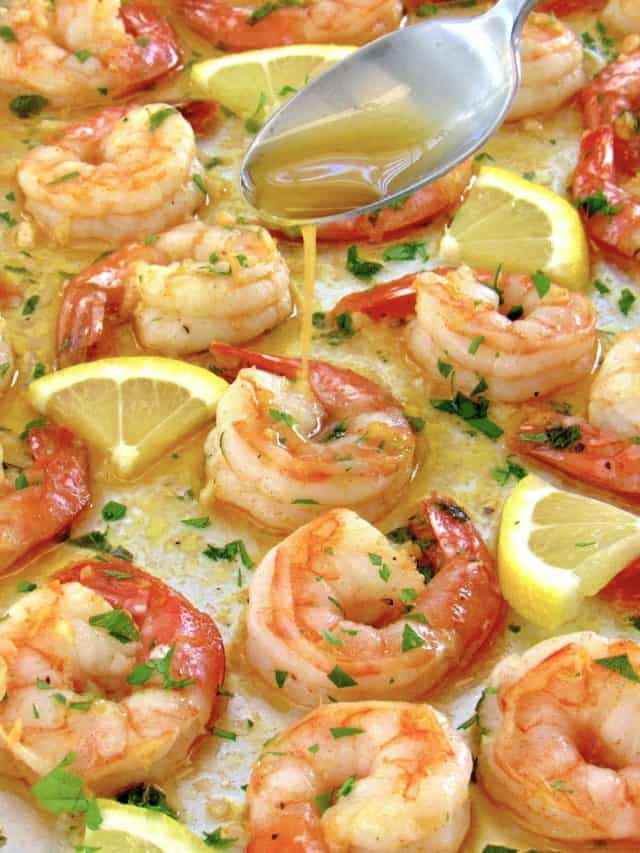

Garlic Butter Shrimp
Home

Description
Garlic Butter Shrimp is a quick, flavorful seafood dish that combines succulent shrimp with a rich, buttery garlic sauce. The shrimp cook quickly, absorbing all the savory goodness of the garlic, butter, and herbs. The result is a dish that’s bursting with flavor in every bite, while still being light and satisfying.
Ingredients
- 1 lb large shrimp (peeled and deveined)
- 4 tablespoons unsalted butter
- 6 cloves garlic (minced)
- 1 tablespoon olive oil
- 1 teaspoon lemon juice (freshly squeezed)
- 1/2 teaspoon paprika (optional for a little heat)
- Salt and black pepper, to taste
- 1/4 teaspoon red pepper flakes (optional, for spice)
- 1 tablespoon fresh parsley (chopped, for garnish)
- Lemon wedges (for serving, optional)
Steps
- Pat the shrimp dry with paper towels and season with salt, pepper, and paprika (if using). Set aside.
- In a large skillet, heat the olive oil and 2 tablespoons of butter over medium heat. Once the butter has melted, add the minced garlic and cook for 1-2 minutes, or until fragrant. Be careful not to burn the garlic.
- Add the shrimp to the skillet in a single layer. Cook for 2-3 minutes on each side, or until the shrimp are pink and opaque. Remove the shrimp from the skillet and set them aside.
- In the same skillet, add the remaining 2 tablespoons of butter and let it melt. Stir in the lemon juice and red pepper flakes (if using), then let the sauce simmer for 1-2 minutes, scraping up any bits of shrimp left in the pan.
- Return the shrimp to the skillet and toss them in the garlic butter sauce until fully coated and heated through.
- Remove from heat, garnish with fresh parsley, and serve with lemon wedges on the side for added freshness. Enjoy over pasta, rice, or with your favorite sides!